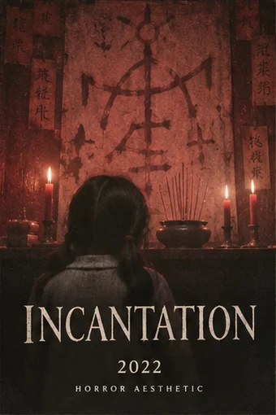

ЗаклятиеIncantation (2022)
Режиссёр: Kevin Ko · Taiwan · Found footage / Folk horrorDirector: Kevin Ko · Taiwan · Found footage / Folk horror
Мать пытается защитить дочь от проклятия, связанного с запретным ритуалом и семейной тайной.A mother tries to protect her daughter from a curse connected to a forbidden ritual and a family secret.
Кевин Ко использует формат найденной плёнки не просто как способ расставить скримеры. Камера становится частью мифологии фильма: запись, наблюдение и распространение изображений обретают тревожный ритуальный смысл.
Особенно сильно картина работает тогда, когда заставляет сомневаться в самой позиции рассказчика. Повторяющиеся символы и прямое обращение создают ощущение участия в том, что должно было остаться невидимым. Семейная драма придаёт ужасу эмоциональную опору.
Иногда «Заклятие» объясняет собственную мифологию слишком подробно, но его визуальный язык запоминается, а лучшие эпизоды обладают сырой, словно заражённой интенсивностью. Это яркий пример современного тайваньского фолк-хоррора цифровой эпохи.
Вердикт
Заклятие — found footage / folk horror. Фильм заслуживает места в архиве HORROR AESTHETIC благодаря собственной атмосфере и выразительному авторскому подходу.
Kevin Ko uses the found-footage format as more than a delivery system for jump scares. The camera becomes part of the film's mythology: recording, watching and sharing images all acquire a disturbing ritual meaning.
The film is especially effective when it makes the viewer question the position from which the story is being told. Its recurring symbols and direct address create the feeling of participating in something that should have remained unseen. The family drama gives the horror an emotional anchor.
Incantation sometimes explains its mythology more openly than necessary, but its visual grammar is memorable and its best sequences have a raw, contaminated intensity. It is a strong modern example of Taiwanese folk horror shaped for the digital age.
Verdict
Incantation is a distinctive found footage / folk horror entry whose atmosphere and formal choices earn it a place in the HORROR AESTHETIC archive.